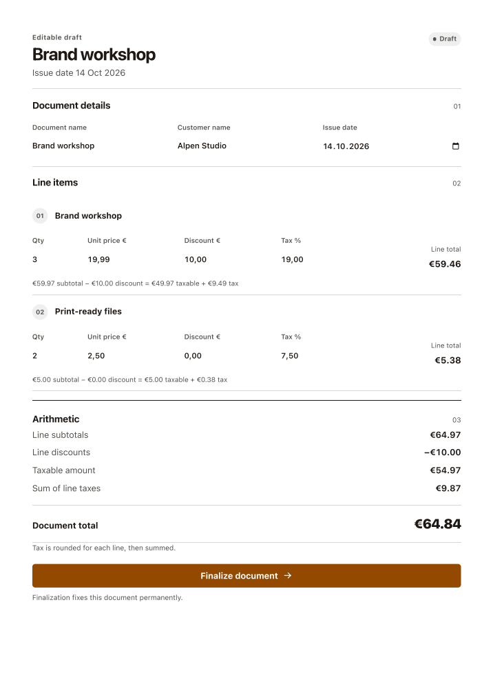
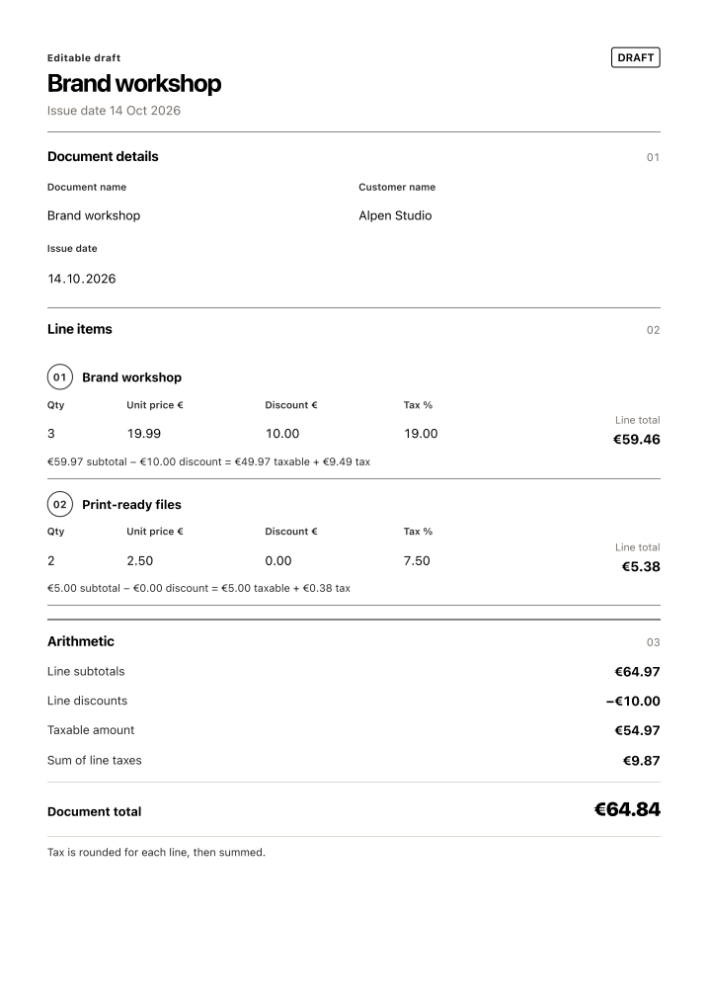
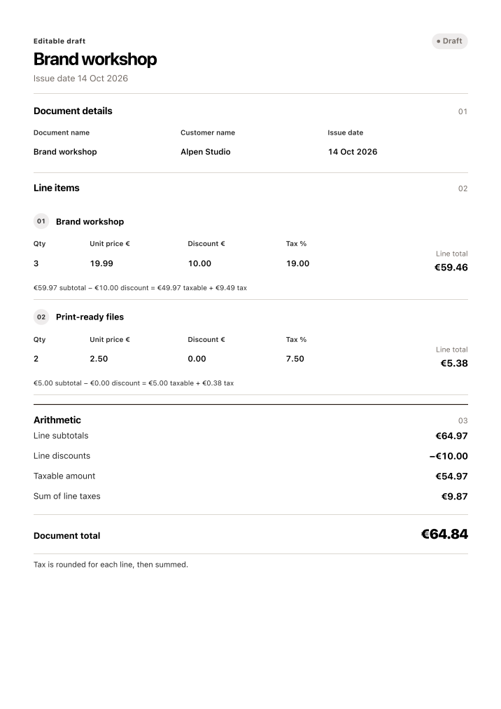
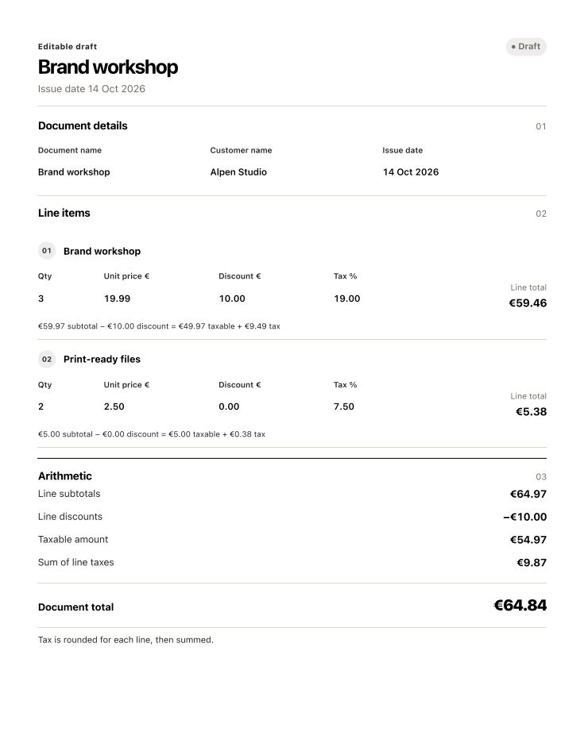
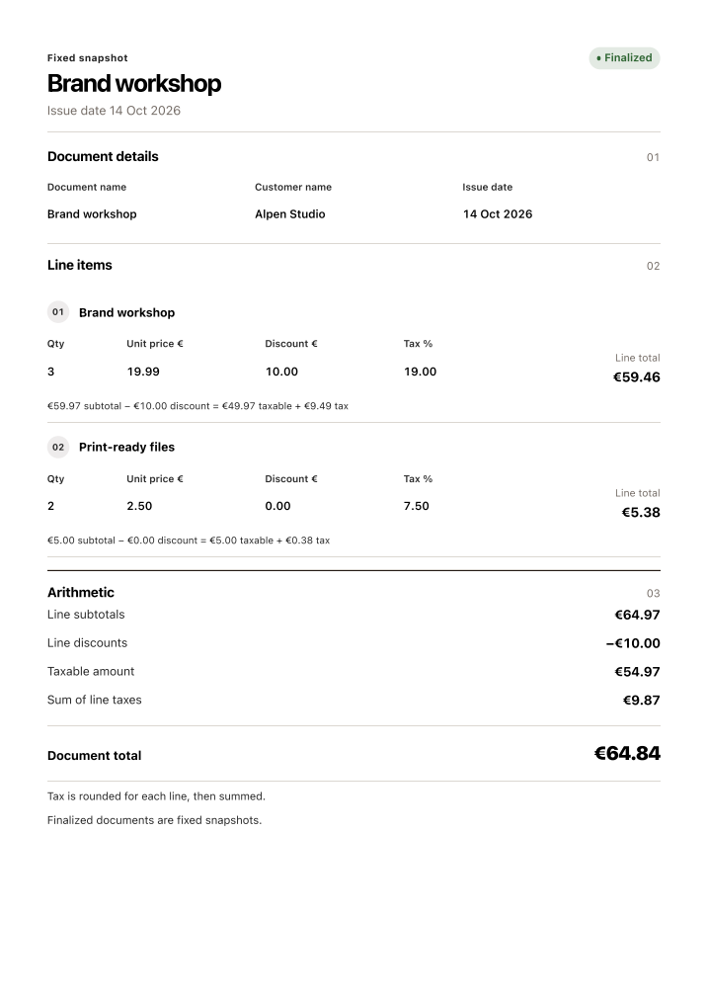
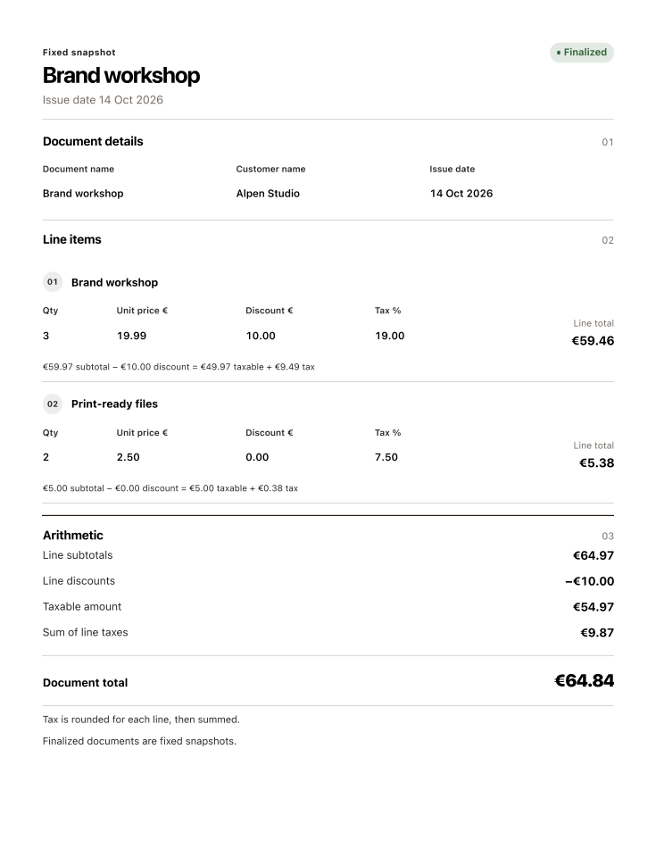
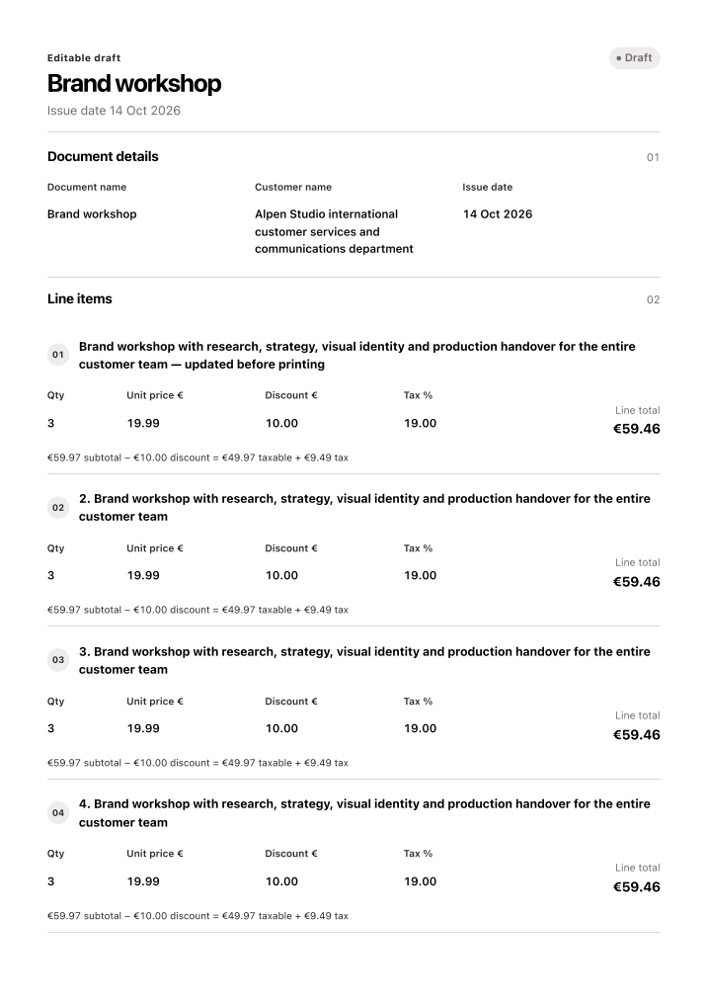
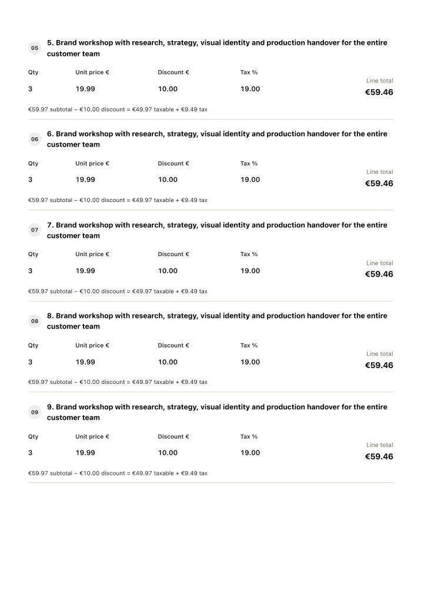
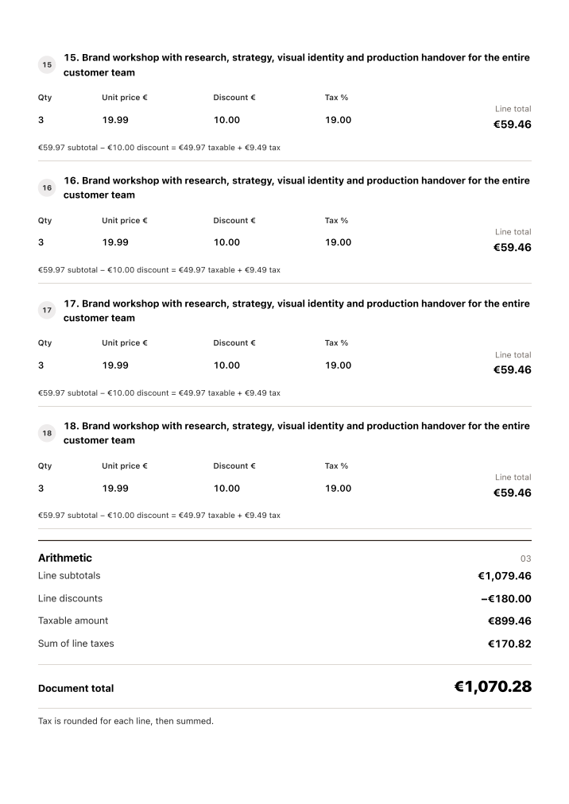

Ledger print comparison
Verified 15 October 2026. Rendered the selected Variant B prototype's print rules using the same A4 paper and 14mm margins as the app. The original references contain no standalone print screenshot.
Corrected three-column document details, compact field typography, status and line-number styling, arithmetic spacing, and empty action containers. Printable text wraps long customer names and descriptions. Block line-item containers keep each printed row together without unused action columns.
App controls and the calendar icon stay off paper. The prototype accidentally prints its Finalize action; the app deliberately continues to hide actions. Dates use the same readable format as the document heading.
Checks: typecheck, lint, six print/mobile tests; A4 and Letter drafts/finalized documents; print layout at 430/794/816/1000px. The 18-line PDF spans four pages (4, 5, 5, 4 lines); extracted labels and arithmetic confirm every line is present. All pages rendered with PDFium and visually inspected; the older local Xpdf renderer omitted text in some images despite it being present in the PDF.
Open sample finalized A4 PDF · Prototype source
Selected prototype, A4
App before, A4
Draft after, A4
Draft after, Letter
Finalized after, A4
Finalized after, Letter
Long document, page 1
Long document, page 2
Long document, page 3Long document, page 4